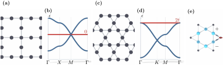

Advanced Quantum Materials 2027 · All lectures · Lecture notes
Session 2. Symmetries, Tight-Binding Band Structure Theory, and Effective Models
2.11b Flat bands from the geometry of the lattice, the Lieb and the kagome lattices
Two standard lattices realize truly flat bands only from their geometry in real space, and not from a fine-tuning of hopping parameters to zero. The Lieb lattice is built from a square lattice where one site out of every four is removed in a regular pattern. Its dispersion has two dispersive bands, which come from the bands of the square lattice (2.14), and in addition one exactly flat band at zero energy. Near the corner \(M\) of the Brillouin zone the two dispersive bands form a linear, Dirac-like cone, and the flat band goes through the tip of this cone. The kagome lattice is built instead from a triangular lattice where one site out of every four is removed. Its dispersion is closer to the one of the honeycomb lattice, with linear crossings similar to Dirac cones, and in addition it has a flat band at the edge of the spectrum. With the sign convention of (2.5) this flat band is at the top, at \(\epsilon=2t\), and it would be at the bottom for the opposite sign of \(t\). In both cases the flat band comes from destructive interference between hopping paths in real space. This is a purely geometric effect and not an effect of interactions, and the physics of strong correlations only enters once electrons are placed into these bands, which are already flat. Figure 2.6 shows both lattices, both dispersions, and the localized state where the hopping paths cancel.

We change the value of the hopping \(t\) of the kagome lattice. Where is the flat band?
Show the answer
The correct option is A.
The flat band comes from interference between hopping paths, which works for any value of the hopping. So the band scales with \(t\), and it stays flat.
Why does the state on one hexagon of the kagome lattice not spread to the sites outside?
Show the answer
The correct option is A.
The alternating amplitudes around the hexagon make the two contributions to each outside site equal and opposite. Nothing is tuned to zero, since this is a property of the geometry.
This material is only on the slides and has no counterpart in session2.ipynb. The notebook treats the honeycomb lattice in depth, but it has no section on the Lieb lattice or on the kagome lattice. The band-structure plots for both lattices are shown directly on the slides. The description above gives their qualitative structure, but to see the actual flat-band dispersion one needs the figure itself.
Try it. In the cell with the bands, replace the honeycomb lattice by lieb_lattice() or by kagome_lattice(). Find the band that does not disperse. With the sign of the hopping of the notebook, the Lieb flat band is at zero energy and the kagome one is at the bottom.